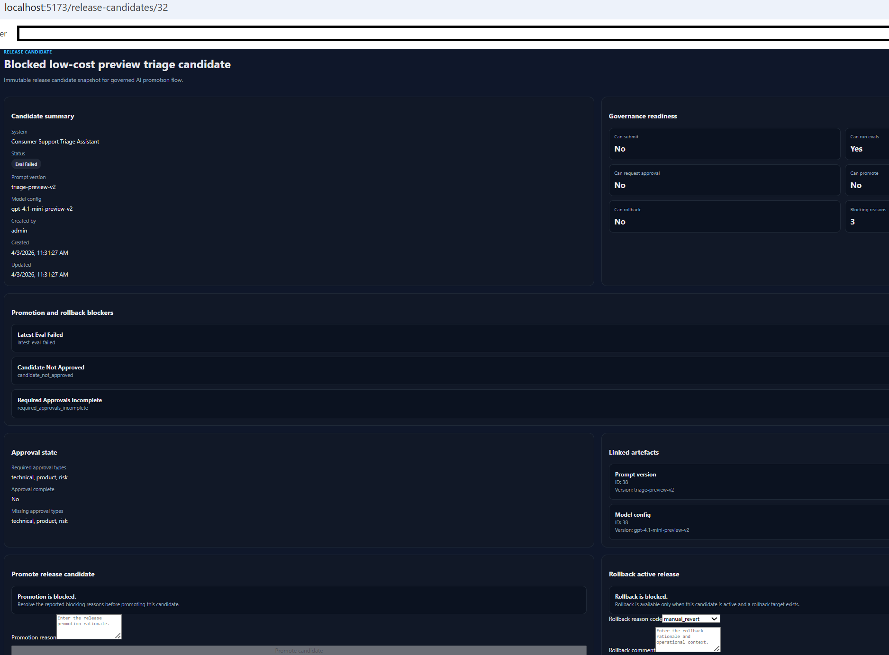

Backend engineering
API development, persistence models, background tasks, async workflows, access control, health checks, and structured domain behaviour across Django and DRF systems.
London, United Kingdom
Django, DRF, React, TypeScript, PostgreSQL, Redis, Celery, Channels, and Docker applied to workflow-heavy products with auditability, evaluation, grounded retrieval, and operational clarity.
Professional summary
My strongest projects demonstrate more than frontend polish or API CRUD. They model controlled workflows for evidence review, policy audit, release governance, evaluation, approvals, rollback, and failure-aware routing. Across the portfolio, I combine Python and TypeScript with Django, React, PostgreSQL, Redis, Celery, Channels, OpenAPI documentation, Docker-based reproducibility, and clear repository structure to build systems that are easier to inspect, explain, and defend.
Role alignment
This portfolio is strongest for Software Engineer, Backend Engineer, Full-Stack Engineer, Python Developer, and AI Platform Engineer roles where workflow reliability, reviewer trust, and maintainable system design matter.
API development, persistence models, background tasks, async workflows, access control, health checks, and structured domain behaviour across Django and DRF systems.
React and TypeScript product surfaces integrated with backend services, typed contracts, operational dashboards, and review-oriented UX.
Grounded retrieval, evaluation cases, auditability, approval constraints, reviewer visibility, and governed decision support rather than unbounded automation.
Flagship projects
These repositories provide the strongest evidence for backend, full-stack, and AI platform positioning grounded in reviewability and workflow control.

Django · DRF · React · TypeScript · PostgreSQL · Redis · Celery · Channels · pgvector
AI-assisted evidence review workflow for regulated-style artefacts, built around claim extraction, evidence sufficiency assessment, contradiction detection, review routing, evaluation, and audit-ready traceability.

Django · React · TypeScript · PostgreSQL · Redis · Celery · JWT · Retrieval · Evaluation
Full-stack knowledge operations platform for owner-scoped notes, async indexing, grounded retrieval-backed answers, and persisted evaluation workflows with operator-visible source support.

Django · DRF · React · TypeScript · PostgreSQL · Redis · Celery · Channels · pgvector
Rules-first policy audit system for contradiction detection, drift analysis, typed findings, citations, review tasks, audit lineage, and degraded-mode visibility.

Django · DRF · React · TypeScript · PostgreSQL · Redis · Celery · Docker Compose
Internal control plane for prompt and model versioning, release candidates, evaluation gates, approvals, incidents, rollback, and governed lifecycle visibility.
Featured projects
These projects broaden the portfolio without displacing the flagship systems.
React · TypeScript · Vite · TanStack Query · Zustand · Zod · Tailwind · Playwright
Frontend-first operational intelligence control plane demonstrating modular React architecture, typed domain modelling, policy-aware workflows, explainable AI support, auditability, and production-minded UX.
Python · FastMCP · Gmail API · OAuth 2.0 · Local stdio transport
Windows-first Python MCP server for Gmail that reads unread emails and creates correctly threaded draft replies using Gmail threading metadata and local OAuth credentials.
Core stack
Experience
Built a portfolio of backend, full-stack, workflow-oriented, and AI-assisted software projects while completing structured software engineering and web development study.
Research-led work requiring structured analysis, evidence-based reasoning, documentation discipline, and clear written communication.
Education and training
Backend applications in Python and Django, frontend interfaces in TypeScript and Angular, SQL with SQLite and MongoDB, and Agile/SDLC practices.
Certificates are listed in full on the CV page, including software engineering, Python, Docker, machine learning, and CI/CD training.